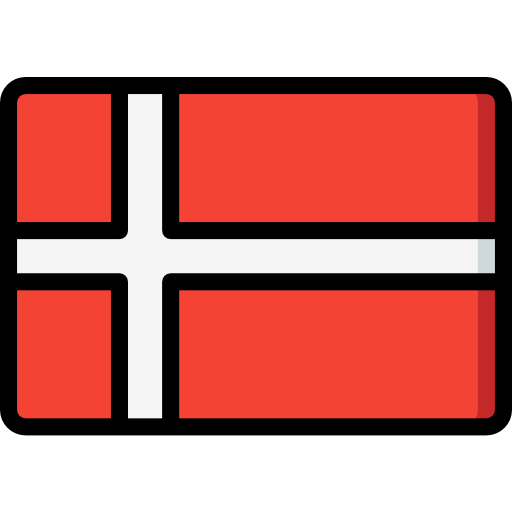
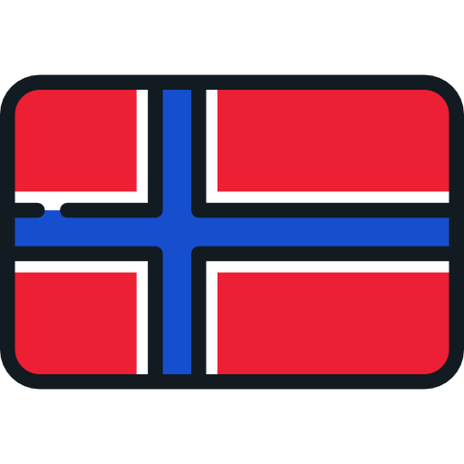
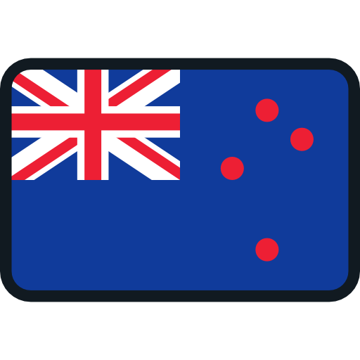
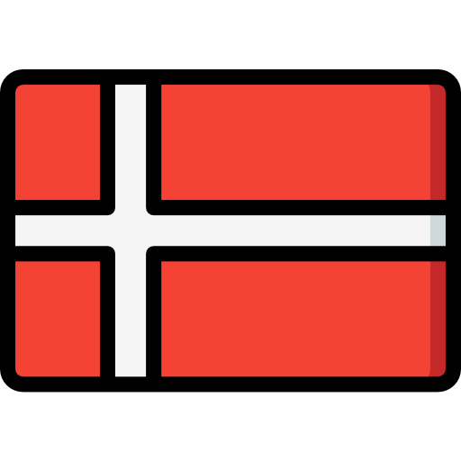
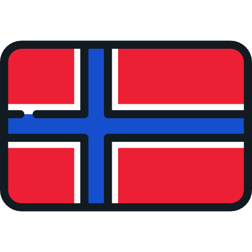
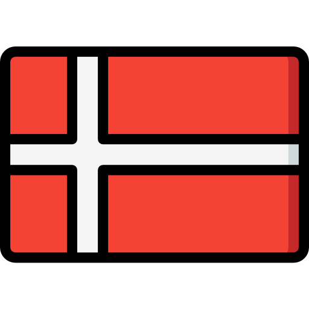
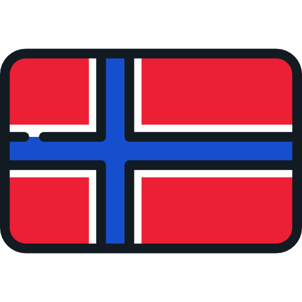
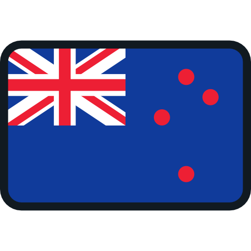
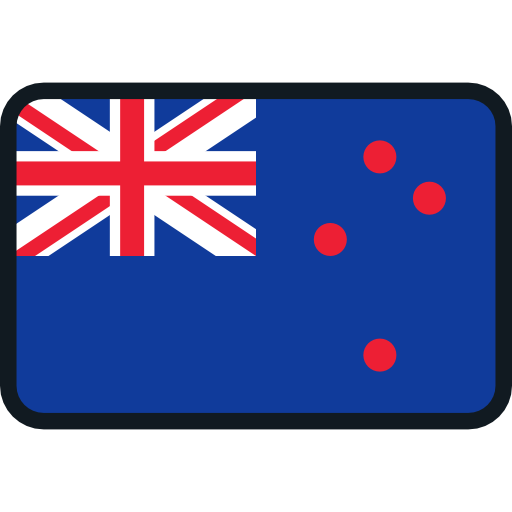

Segundo a OIT (Organização Internacional do Trabalho, uma agência especializada das Nações Unidas), ainda estamos muito longe de alcançar quase dois terços dos indicadores de progresso e que, de 2015 para cá, pouco foi feito. Das três áreas abordadas na ODS, as áreas sociais e ambientais são as que enfrentam maiores dificuldades. De acordo com um estudo realizado pela agência, é concluído que é necessária uma maior ação multilateral e nacional para acelerar o progresso, o estudo também adverte que a ação "ainda não está avançando na velocidade ou escala exigida", faz um apelo por um "processo cumulativo circular para impulsionar um progresso equilibrado" e identifica padrões e desequilíbrios.
Apesar de tudo, também não estamos parados e aqui temos alguns exemplos de progressos ja obtidos:



1. Países Escandinavos (Suécia, Dinamarca, Noruega e Finlândia)
Os países nórdicos frequentemente são mencionados como modelos em relação ao ODS 8, especialmente no que diz respeito a trabalho decente, proteção social e equidade.
Economias Diversificadas e Sustentáveis: Essas economias têm experimentado crescimento constante, impulsionado pela inovação, digitalização e a transição para uma economia verde. O setor de energias renováveis na Dinamarca, por exemplo, é um exemplo de como as economias podem crescer de maneira sustentável.
Trabalho Decente e Condições de Trabalho: Os países nórdicos possuem algumas das melhores práticas de salário justo, equidade de gênero e qualidade de trabalho. A legislação trabalhista protege os trabalhadores, garantindo boas condições de trabalho, direitos a férias e licença parental generosa, além de políticas para combater o assédio no trabalho.
Segurança Social: As redes de segurança social nesses países são robustas, com sistemas de saúde universal, pensões, segurança no desemprego e programas de renda básica para quem está fora do mercado de trabalho. O modelo de bem-estar social contribui para reduzir a pobreza e promover a equidade.
2. Alemanha
A Alemanha é um exemplo destacado de crescimento econômico inclusivo e um modelo para muitos países em termos de políticas de trabalho decente, qualificação profissional e inclusão social.
Indústria e Inovação: A Alemanha tem uma indústria diversificada, com destaque para setores como engenharia e tecnologia de ponta. O país também lidera na indústria de energias renováveis, mostrando como é possível alavancar o crescimento econômico com foco na sustentabilidade.
Modelo de Qualificação Profissional (Dual System): O sistema de educação profissional e formação dual da Alemanha, que combina ensino acadêmico com prática em empresas, tem sido crucial para reduzir o desemprego juvenil e aumentar a produtividade.
Proteção Social e Inclusão: A Alemanha tem um sistema robusto de segurança social, com benefícios significativos em caso de desemprego e aposentadoria, além de iniciativas que visam integrar grupos vulneráveis no mercado de trabalho.
3. Países Baixos (Holanda)
A Holanda é conhecida por sua abordagem equilibrada entre crescimento econômico e bem-estar social, além de ser um exemplo de como integrar políticas de trabalho decente com inovação tecnológica.
Trabalho Flexível e Remoto: A Holanda foi pioneira em políticas de trabalho flexível e teletrabalho, com muitas empresas adotando modelos híbridos. Isso tem ajudado a melhorar o equilíbrio entre vida pessoal e profissional.
Crescimento Econômico e Sustentabilidade: O país tem uma forte ênfase em transição para a economia verde, com políticas públicas que incentivam a inovação sustentável, como no setor de energia e mobilidade limpa.
Igualdade de Gênero e Inclusão: A Holanda tem avançado significativamente na promoção da igualdade de gênero no trabalho, com políticas que buscam reduzir as disparidades salariais entre homens e mulheres e promover a diversidade nas empresas.
4. Canadá
O Canadá tem sido um exemplo de um país com crescimento econômico inclusivo, que combina qualificação profissional com fortes políticas de inclusão social.
Diversificação Econômica e Inovação: O Canadá é um exemplo de como a diversificação econômica pode gerar crescimento. O país investiu significativamente em setores como tecnologia digital, biotecnologia e energia renovável, criando novos empregos e oportunidades de trabalho decente.
Políticas de Inclusão: O Canadá tem promovido políticas que incluem minorias, pessoas com deficiência e indígenas no mercado de trabalho. Iniciativas para garantir a equidade de gênero e combater a discriminação no local de trabalho têm sido uma prioridade.
Educação e Qualificação Profissional: O sistema educacional canadense tem sido eficaz na qualificação de sua força de trabalho, com programas focados em qualificação tecnológica e requalificação profissional para se adaptar às novas demandas do mercado.
5. Singapura
Singapura tem demonstrado como um pequeno país pode ter crescimento econômico impressionante e ao mesmo tempo implementar políticas que promovem emprego pleno e inclusão social.
Economia Digital e Inovação: Singapura se tornou um hub global para tecnologia e inovação, com investimentos substanciais em inteligência artificial, automação e biotecnologia, criando novas oportunidades de emprego em setores de alta tecnologia.
Desenvolvimento de Habilidades: A qualificação contínua é um pilar da política econômica de Singapura. O governo investe fortemente em programas de treinamento profissional e em parcerias público-privadas para melhorar as habilidades da força de trabalho e reduzir o desemprego estrutural.
Sustentabilidade e Crescimento Verde: O país também está focado em práticas sustentáveis, com políticas para promover a economia circular, reduzir as emissões de carbono e garantir uma gestão responsável dos recursos naturais.
6. Japão
O Japão tem avançado no ODS 8, especialmente no que diz respeito a crescimento econômico sustentável, inovação tecnológica e qualificação profissional.
Tecnologia e Inovação: O Japão tem sido uma potência global em inovação tecnológica, com destaque para os setores de robótica, automação e tecnologia verde. O país tem procurado integrar tecnologias de ponta para manter o crescimento econômico e gerar empregos de qualidade.
Qualificação Profissional: O Japão possui um dos sistemas educacionais mais eficazes e focados em inovação tecnológica, com um forte vínculo entre as universidades e a indústria, ajudando na adaptação da força de trabalho às novas necessidades do mercado.
Equidade e Inclusão: Embora o Japão enfrente desafios relacionados à desigualdade de gênero e à inclusão de minorias, tem implementado reformas significativas para aumentar a participação feminina no mercado de trabalho e promover a equidade salarial.
7. Nova Zelândia
A Nova Zelândia tem demonstrado avanços notáveis na equidade social, qualidade de vida e crescimento econômico sustentável.
Trabalho Decente e Equidade de Gênero: O país tem políticas robustas para garantir equidade de gênero e igualdade no trabalho, com altas taxas de participação feminina na força de trabalho e políticas para promover salários justos.
Inovação e Sustentabilidade: A economia verde e a inovação tecnológica são áreas de grande desenvolvimento na Nova Zelândia, especialmente em tecnologias limpas e agricultura sustentável.
Bem-estar Social: O modelo de bem-estar social da Nova Zelândia é altamente inclusivo e visa a redução das desigualdades, com programas que buscam apoiar os mais vulneráveis e garantir acesso a oportunidades de trabalho decente.

 





 
